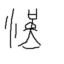

造字原理基于说文解字、甲骨文、金文、竹简汉字
首页 汉字按部索引 相关古书

发声：
部件：乳
造字法乳：象形，象人弯腰乳子之形。
说文解字乳：人及鳥生子曰乳，獸曰産。从孚从??。??者，玄鳥也。《明堂月令》："玄鳥至之日，祠于高禖，以請子。"故乳从??。請子必以??至之日者，??，春分來，秋分去，開生之候鳥，帝少昊司分之官也。
「其母懷軀，陽氣內養，乳中虛冷，兒得母寒，故令不時愈。」[三國志]